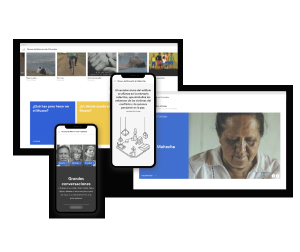

Sounds of a recent past
Celonis
Comisión de la verdad
Caminando la memoria

Aquí vive gente
The Nowhere Archive
Digital Archive of Testimonial Textiles
Time(s) to Listen
Beatriz González: Voices of Memory
Technologies for Introspection

ChEMBL
Invisible Interfaces
UK PACT
Ventanas de Encuentro
Museum of Memory of Colombia